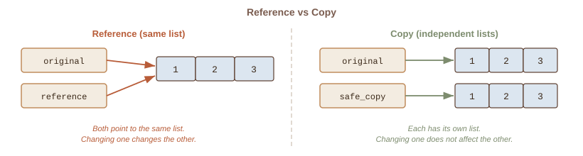

Week 7: Advanced List Operations
CSC-125-201 · Spring 2026
CSC-125-201 · Spring 2026
| # | Section |
|---|---|
| 1 | Week 6 Review |
| 2 | Lecture Slides |
| - | Break |
| 3 | Code Lecture |
This week: we unlock more powerful ways to slice, sort, search, and combine lists.
Last week we sliced with list[start:end]. There is a third option: the step. Think of stepping stones across a pond. A step of 2 means you land on every other stone.
numbers = [10, 20, 30, 40, 50, 60]
evens = numbers[::2] # [10, 30, 50]Sometimes you need data in the opposite order: newest first instead of oldest, highest to lowest, or simply reading backward. Python gives you two approaches.
letters = ["a", "b", "c", "d"]
backward = letters[::-1] # ["d", "c", "b", "a"]Choose based on whether you still need the original order.
Imagine a bookshelf where books are placed randomly. Finding a specific title means checking every single book. Sorting puts them in order so you (or your program) can find things faster and spot patterns like the highest or lowest values.
Python provides two ways to sort, and choosing the right one matters.
This is one of the most common beginner mistakes. Both sort data, but they work very differently.
scores = [88, 72, 95]
scores.sort()scores = [88, 72, 95]
ranked = sorted(scores)Never write x = scores.sort(). That stores None, not a sorted list.
Before searching a filing cabinet, you first ask: "Is the file even in here?" The in keyword answers that question for lists. It returns True or False.
menu = ["coffee", "tea", "juice"]
has_coffee = "coffee" in menu # TrueOnce you know an item is in the list, you might need to know where it sits or how many times it appears. Two methods handle this.
colors = ["red", "blue", "red", "green"]
pos = colors.index("blue") # 1
qty = colors.count("red") # 2You already know .append() adds one item. But what if you need to add an item at a specific position, or merge two lists together?
tasks = ["email", "report"]
tasks.insert(0, "coffee") # ["coffee", "email", "report"]If you write copy = original, both names point to the same list. Changing one changes the other, like two name tags on the same person.
original = [1, 2, 3]
safe_copy = original.copy() # independent
A sentence is just words joined by spaces. Python can split a string into a list of parts, or join a list of parts back into a string. These two operations are like taking apart a LEGO set and rebuilding it.
words = "hello world python".split()
# ["hello", "world", "python"]A list can hold any type of data, including other lists. Think of a spreadsheet: each row is a list, and the whole table is a list of rows.
grades = [[85, 90], [78, 92], [95, 88]]
first_student = grades[0] # [85, 90]
specific = grades[0][1] # 90Available on Moodle, due Monday 11:59 PM.
This week: practice advanced list operations including slicing, sorting, and searching.
Reference sheet posted on Moodle to help with the assignment.
Next week (Week 8): For Loops - In-Person